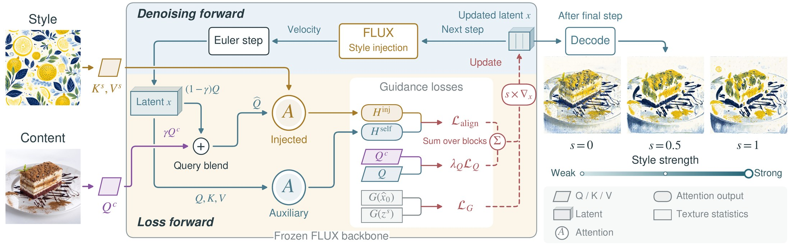
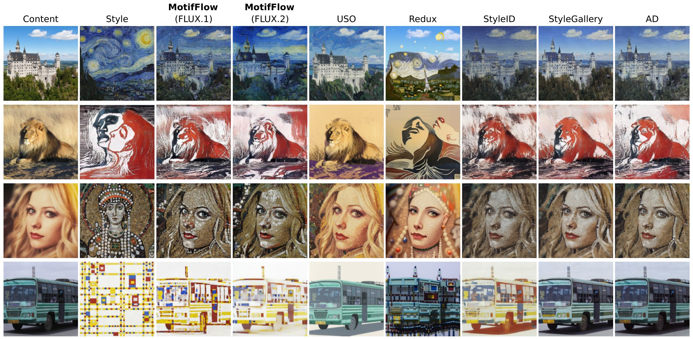
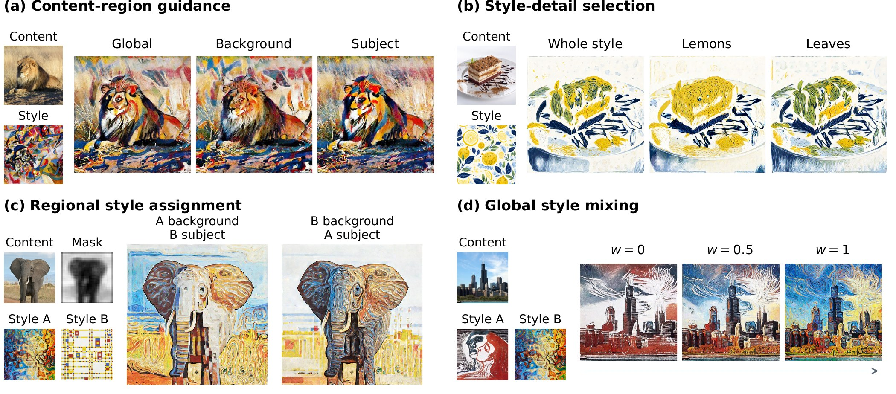
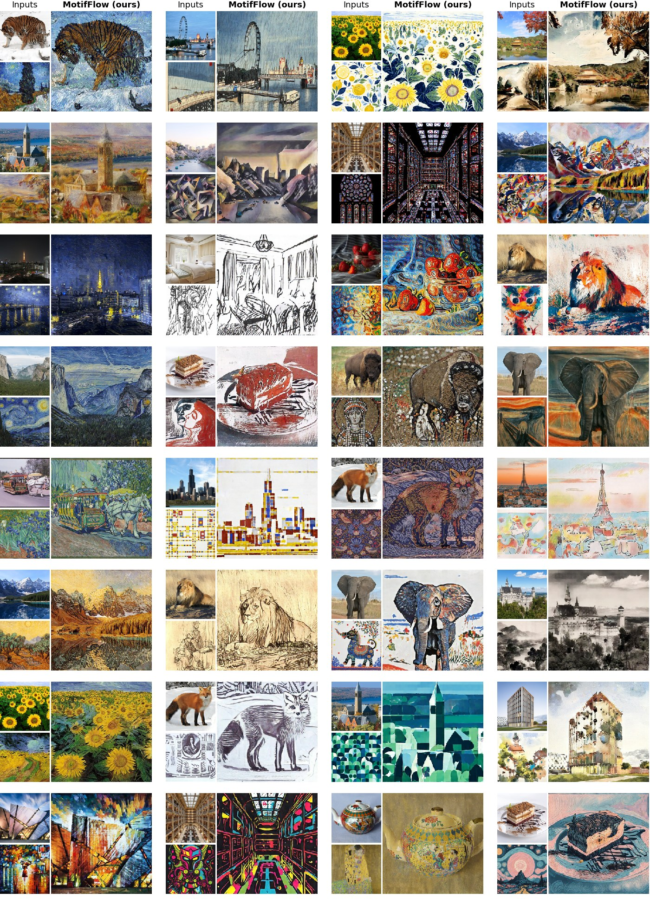

From color to motif with one control
Pick an example and drag the slider. At 0% only attention injection is active; raising the guidance strength develops the brushwork and then the characteristic motifs of the style image.
50%
Training-Free, Self-Contained Style Transfer
from Color to Motif in Rectified Flow Transformers
University of Tsukuba
Pick an example and drag the slider. At 0% only attention injection is active; raising the guidance strength develops the brushwork and then the characteristic motifs of the style image.
Expressive style transfer must reproduce a painting's palette, brushwork, and characteristic motifs while retaining the content image's structure. Attention injection is effective in U-Net-based diffusion models, but adapting it to FLUX often transfers color without capturing the style's distinctive brushwork. Our analysis across backbones links this gap to how injected features are integrated across neighboring spatial locations.
We introduce MotifFlow, a training-free, self-contained framework that combines style injection with style-alignment guidance in FLUX. Injection supplies style features during generation but does not explicitly encourage the model's native attention output to align with them. We therefore use the discrepancy between native and injected attention outputs to guide latent-space updates, encouraging the evolving image to develop the style's distinctive brushwork and motifs. Style encoding, guidance, and synthesis all use the same frozen backbone, without auxiliary image encoders or trained adapters.
A single strength parameter controls the transition from color transfer to pronounced brushwork and motifs, with additional support for regional stylization and style mixing. Experiments on 1,000 content–style pairs show that MotifFlow better matches the local textures of the style image than baseline methods and produces more consistent stylization than injection alone. The same design extends to FLUX.2.
Injection supplies style features to the forward pass. Alignment guidance then asks the image to produce those features by itself.

A frozen FLUX backbone. Nothing is fine-tuned, and no adapter or LoRA is added.
Style encoding, guidance and synthesis use the same model, with no auxiliary image encoder.
A single parameter scales the latent guidance, from color transfer to brushwork to motifs.
Painted strokes, graphic marks, mosaic tiles and geometric patterns, on FLUX.1 and FLUX.2.

Masks come from the backbone's own text-to-image attention, so no segmentation model is needed.


@article{xie2026motifflow,
title = {MotifFlow: Training-Free, Self-Contained Style Transfer from Color to Motif in Rectified Flow Transformers},
author = {Xie, Chun and Kitahara, Itaru},
journal = {arXiv preprint arXiv:2611.33371},
year = {2026}
}